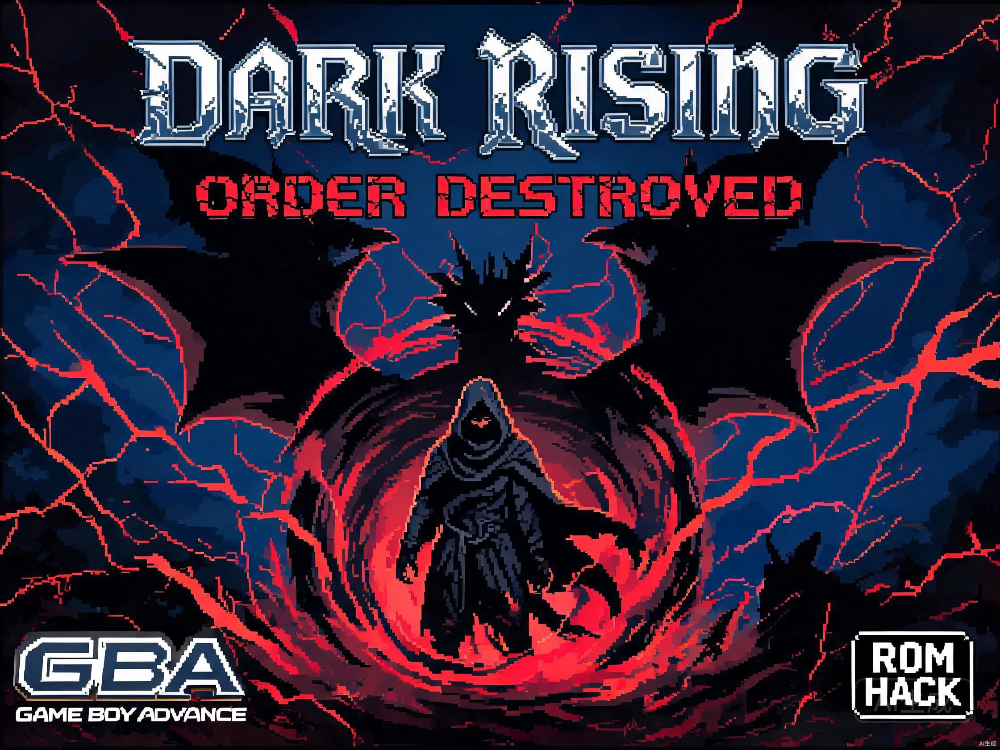
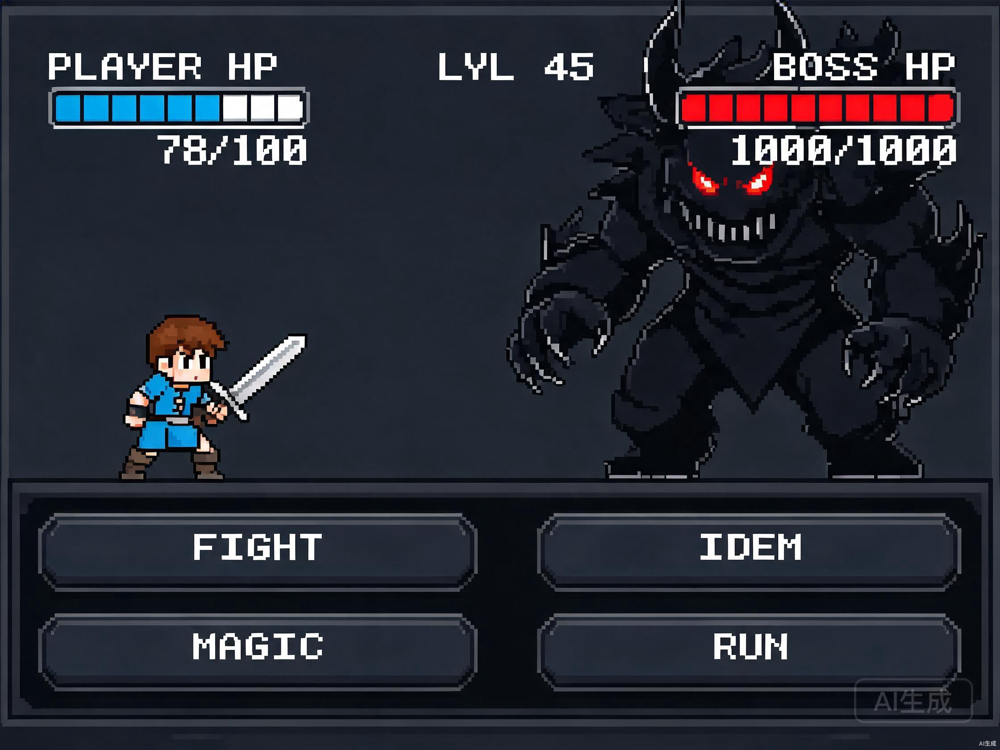
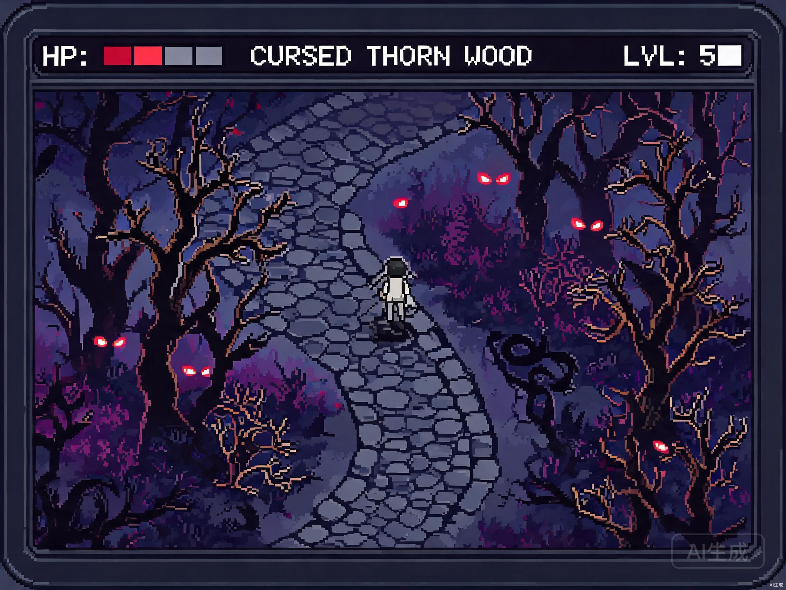

在线试玩 - GBA 浏览器模拟器 (已内置预载 ROM，即开即玩)
Select
Start
取消/跑鞋
确认/攻击
游戏介绍
下载地址
游戏截图
金手指
玩家点评
游戏简介
《口袋妖怪：黑暗升起（秩序毁灭）》（Pokemon Dark Rising: Order Destroyed）是由国外同人社团 DRG Team 制作的一款基于《口袋妖怪：火红》的 GBA 同人改版游戏。本作是《黑暗升起》系列的前传作品，讲述了在"黑暗军团"被击退十年后，神秘的"秩序教团"再次苏醒，企图将整个世界拖入混沌深渊的史诗故事。
作为系列的前传，本作拥有完整的独立剧情线、超过 386 只可捕获精灵、12 个全新设计的道馆、贯穿全程的反转剧情以及多结局走向。无论是初次接触该系列还是老玩家，都能在《秩序毁灭》中找到属于自己的乐趣。
游戏特色
- 完整的独立剧情，《黑暗升起》前传作品，单独可玩
- 386+ 只可捕获精灵，包括初代、二代、三代全精灵
- 12 个全新设计的主题道馆，每个道馆都有原创机关与剧情
- 新增"黑暗化"系统，主角可短暂获得精灵的暗影形态
- 创新的"双线结局"设计，根据关键选择触发真结局或普通结局
- 原版战斗系统 + 全新Mega进化、Z招式与极巨化


常用金手指代码（GameShark / Action Replay）
使用方法：在模拟器菜单中选择"金手指 -> 添加代码"，输入以下代码即可生效。
穿墙大师码（Master Code）：
00006FA7 000A
1006AF8C 0007
无限金钱 999999：
820257BC 423F
820257BE 000F
大师球 x99（背包第一格）：
82025840 0001
82025842 0063
训练师小智
剧情真的太棒了！比起原版火红，暗黑升起的前传故事更有深度，难度也拉满了！赞！
皮卡丘爱吃果子
三大龙系开局太帅了，迷你龙、宝贝龙、圆陆鲨直接起飞！浏览器直接能玩，手感很丝滑。